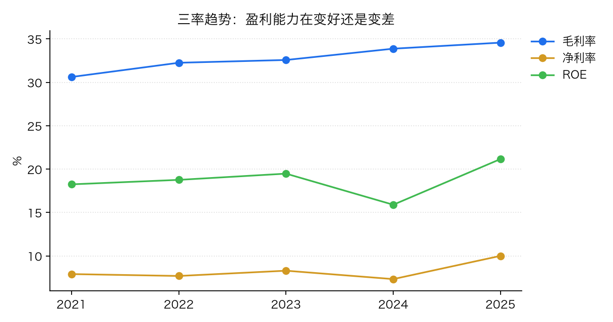
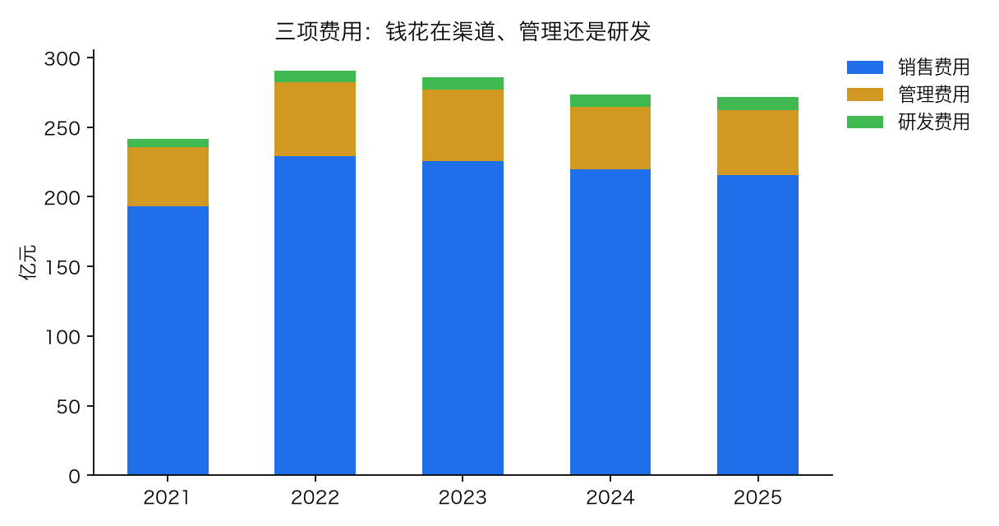
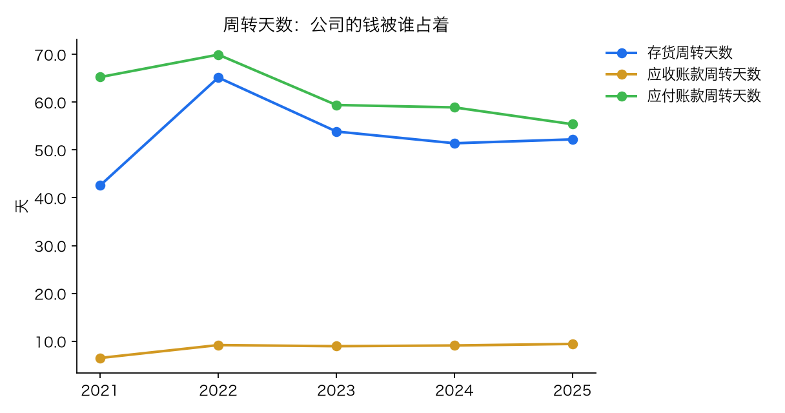
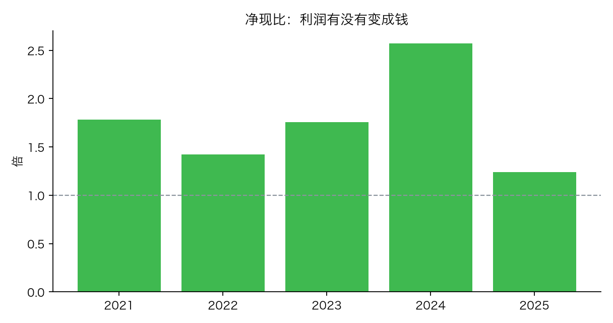

伊利股份（600887.SH）2025 年报深度解读¶
一页纸¶
归母净利润 115.65 亿元是伊利历史上最高的一年，但这次跳升不是主业赚出来的。 营业收入 1,156.36 亿元，只比上年的 1,153.93 亿元多了一点；毛利也只是从 390.94 亿元走到 399.82 亿元（P86）。
把营业利润从 101.82 亿元推到 135.28 亿元的主力，是资产减值损失。 这一项从 -46.76 亿元收窄到 -7.30 亿元，信用减值损失同时从 -5.55 亿元收窄到 -2.68 亿元（P86）。投资收益则从 24.17 亿元塌到 1.47 亿元（P86），还回去一大半。21.16% 的 ROE 是一次出清之后的报表修复。
同一份年报里，经营现金流少了三分之一。 经营活动现金流量净额 143.44 亿元，上年 217.40 亿元，净现比从 2.57 倍掉到 1.24 倍（P89）。这是本期最需要解释的矛盾：利润创新高，现金反而退了一格。
上年的 217.40 亿元本身也不可重复。 那一年合同负债从 86.96 亿元升到 120.73 亿元（P83）——先收钱后确认收入，等于向渠道借了一笔无息款。FY2025 这笔钱开始还，合同负债降到 105.64 亿元。1.24 倍才是常态。
短期要看的是三个数字，不是一个。 短期借款 456.31 亿元、短期应付债券 90.43 亿元、一年内到期的长期借款 42.63 亿元（P83、P190），而货币资金只有 194.95 亿元（P82）。
但真实的现金厚度不在货币资金里。 大额存单分三处：一年内到期 108.73 亿元、其他流动资产 135.54 亿元、其他非流动资产 281.09 亿元（P160、P161、P183）。利息收入 21.70 亿元高于利息支出 13.66 亿元（P202）。风险在利差与再融资条件，不在偿付能力。
分红是这套结构的另一端。 经营现金流 143.44 亿元要同时覆盖资本开支 30.37 亿元与分配支出 120.25 亿元（P90），两项合计已超过前者；而分红下限被写成三年不低于归母净利润 75%（P49），它不会自己缩回去。
下一年只盯两件事：经营现金流的方向，和短期借款与超短融余额的方向。 前者决定分红能不能自己付，后者决定付不出来时还能滚多久。其他判断都挂在这两条上。
| 指标 | 2021 | 2022 | 2023 | 2024 | 2025 |
|---|---|---|---|---|---|
| 营业收入（亿元） | 1,101.44 亿元 | 1,226.98 亿元 | 1,257.58 亿元 | 1,153.93 亿元 | 1,156.36 亿元 |
| 归母净利润（亿元） | 87.05 亿元 | 94.31 亿元 | 104.29 亿元 | 84.53 亿元 | 115.65 亿元 |
| 毛利率 | 30.62% | 32.26% | 32.58% | 33.88% | 34.58% |
| 净利率 | 7.90% | 7.69% | 8.29% | 7.33% | 10.00% |
| ROE | 18.25% | 18.76% | 19.48% | 15.89% | 21.16% |
| ROIC | 15.06% | 13.84% | 13.93% | 13.34% | 19.64% |
| 经营活动现金流（亿元） | 155.28 亿元 | 134.20 亿元 | 182.90 亿元 | 217.40 亿元 | 143.44 亿元 |
| 自由现金流（亿元） | 88.45 亿元 | 67.74 亿元 | 113.35 亿元 | 177.61 亿元 | 113.07 亿元 |
| 净现比 | 1.78 倍 | 1.42 倍 | 1.75 倍 | 2.57 倍 | 1.24 倍 |
| 资产负债率 | 52.15% | 58.66% | 62.19% | 62.91% | 61.51% |
| 分红率 | —（不可得） | —（不可得） | —（不可得） | —（不可得） | 75.48% |
红旗判定：清单共 32 项，命中 3 项，数据不足 17 项（数据不足不等于没问题）。
| 严重度 | 红旗 | 状态 | 观测值 |
|---|---|---|---|
| 高 | 关联采购占营业成本比例过高 | 命中 | FY2025 关联方采购金额/营业成本 = 20.65% |
| 高 | 分红超过自由现金流 | 命中 | FY2025 分配股利、利润或偿付利息支付的现金 120.25 亿元 vs 自由现金流 113.07 亿元 |
| 中 | 短期借款支撑长期资产（短债长投） | 命中 | FY2025 短期借款/银行借款 = 98.98%，且FY2025 货币资金/短期借款 = 42.72% |
生意：钱是怎么赚的¶
这门生意的骨架，是三条产品线共用一个奶源、一套冷链、一张经销商网。 液体乳 704.22 亿元、奶粉及奶制品 330.78 亿元、冷饮 98.22 亿元、其他 12.22 亿元（P242），构成 1,156.36 亿元营业收入（P86）的主体。
四块的体量差得很远，但它们摊的是同一批工厂、同一批送货车、同一批业务员。 所以结构问题不是哪块最大，而是成本由谁摊、费用由谁背。液体乳占了大头，也正好是价格最透明、竞争最直接的那一块。
定价权不在公司手里，在货架和经销商手里。 年报把液体乳收入的下滑拆成销量、产品结构、价格三项，并明确价格是主要拖累（P21）；同期公司液态类乳品零售额份额仍是第一（P11）。
份额在涨、收入在跌，只有一种解释：份额是拿价格换的。 这种竞争比的不是谁的产品更好，而是谁更愿意为货架和心智持续付费，所以它不会因为某个对手退出就结束，这也是销售费用率下不去的根本原因。
成本端能控的部分很少。 营业成本 756.54 亿元（P86）里直接材料占绝对多数，直接人工与制造费用的比重都很小（P23），原奶一动毛利率就跟着动：这是一门原料决定毛利的生意。
费用端能控的部分更少。 销售费用 215.45 亿元、管理费用 46.96 亿元、研发费用 9.15 亿元（P86），销售费用率 18.63%；毛利 399.82 亿元里有超过一半被销售费用拿走，研发费用率只有 0.79%（P86）。门槛不在配方，在这笔钱怎么花。
对下游几乎现款现货，对上游还留着账期——但两端都在收紧。 应收账款 29.87 亿元、周转 9.4 天（P82）；应付账款 114.79 亿元、周转 55.4 天（P83）。应付周转从 FY2022 的 69.9 天降到 55.4 天，上游把信用收回去了，缺口只能由短债补。
底色是一份靠规模与广告费换来的辛苦钱，资本回报却不低。 净利率 10.00%、ROIC 19.64%（P86、P87），五年毛利率从 30.62% 单向上行到 34.58%（P86）。公司能自主的只有费用节奏：本期广告宣传费从 136.12 亿元压到 128.20 亿元（P201），压出来的利润同时是品牌投入的欠账。
| 品类 | 2025 | 占营业收入 |
|---|---|---|
| 液体乳收入 | 704.22 | 60.9% |
| 奶粉及奶制品收入 | 330.78 | 28.6% |
| 冷饮收入 | 98.22 | 8.5% |
| 其他收入 | 12.22 | 1.1% |
| 合计 | 1,156.36 | 100.0% |
| 编号 | 严重度 | 判断 | 依据 | 证据 |
|---|---|---|---|---|
| F-cb-01 | 中 | 收入进入平台期 | FY2024→FY2025 收入增速 FY2024 -8.24%、FY2025 +0.21%，连续 2 期低于 1% | E-092、E-093 |
五年账¶
五年收入是一个平台：FY2023 见顶，此后两年横在 1,150 亿元附近。 营业收入 FY2021 1,101.44 亿元、FY2022 1,226.98 亿元、FY2023 1,257.58 亿元，然后退到 FY2024 的 1,153.93 亿元与 FY2025 的 1,156.36 亿元（P86）。
收入停了，毛利率却在涨，这是后面所有数字的起点。 毛利率 30.62%、32.26%、32.58%、33.88%、34.58%（P86），五年没有回头：不再靠卖得多，开始靠卖得贵。
毛利的五年轨迹比收入干净。 毛利 337.27 亿元、395.79 亿元、409.70 亿元、390.94 亿元、399.82 亿元（P86）。FY2024 毛利回落而毛利率从 32.58% 升到 33.88%——两者反向，只能是卖的东西变了，不是价格变了。
这条抬升来自产品结构与原奶价格，不来自提价能力。 结构可以年年推，原奶价格会转；当成提价能力的证据，明年就会被打脸。
利润的五年是一条 V：先滑到 FY2024 的谷底，再跳到历史最高。 归母净利润 87.05 亿元、94.31 亿元、104.29 亿元、84.53 亿元、115.65 亿元；ROE 18.25%、18.76%、19.48%、15.89%、21.16%（P82、P87）。
ROE 的抬升靠的是净利率与杠杆，不是资产效率。 净利率从 7.33% 跳到 10.00%，权益乘数 2.78 倍；总资产周转率只有 0.76 倍，五年里从 1.08 倍一路下滑（P82、P86、P87）。
真正换了挡的是现金去向：从投产能改成发钱。 资本开支 66.83 亿元、66.46 亿元、69.56 亿元、39.78 亿元、30.37 亿元（P90），后两年砍掉一半以上；分配股利支付的现金 56.93 亿元、75.00 亿元、84.16 亿元、90.92 亿元、120.25 亿元（P90）。
但经营现金流没有跟着变多。 155.28 亿元、134.20 亿元、182.90 亿元、217.40 亿元、143.44 亿元（P89），FY2025 反而是五年里第二低。
| 项目 | 2021 | 2022 | 2023 | 2024 | 2025 |
|---|---|---|---|---|---|
| 营业收入 | 1,101.44 亿元 | 1,226.98 亿元 | 1,257.58 亿元 | 1,153.93 亿元 | 1,156.36 亿元 |
| 毛利 | 337.27 亿元 | 395.79 亿元 | 409.70 亿元 | 390.94 亿元 | 399.82 亿元 |
| 营业利润 | 102.30 亿元 | 108.60 亿元 | 118.73 亿元 | 101.82 亿元 | 135.28 亿元 |
| 归母净利润 | 87.05 亿元 | 94.31 亿元 | 104.29 亿元 | 84.53 亿元 | 115.65 亿元 |
| 经营活动现金流 | 155.28 亿元 | 134.20 亿元 | 182.90 亿元 | 217.40 亿元 | 143.44 亿元 |
| 自由现金流 | 88.45 亿元 | 67.74 亿元 | 113.35 亿元 | 177.61 亿元 | 113.07 亿元 |
| ROE | 18.25% | 18.76% | 19.48% | 15.89% | 21.16% |
| 净利率 | 7.90% | 7.69% | 8.29% | 7.33% | 10.00% |

数据来源：公司年度报告原文（页码见正文引用），金额为合并报表口径。
杜邦分解¶
| 项目 | 2021 | 2022 | 2023 | 2024 | 2025 |
|---|---|---|---|---|---|
| ROE | 18.25% | 18.76% | 19.48% | 15.89% | 21.16% |
| 净利率 | 7.90% | 7.69% | 8.29% | 7.33% | 10.00% |
| 总资产周转率（次） | 1.08 倍 | 0.94 倍 | 0.83 倍 | 0.75 倍 | 0.76 倍 |
| 权益乘数 | 2.14 倍 | 2.61 倍 | 2.83 倍 | 2.89 倍 | 2.78 倍 |
利润表：从毛利到归母¶
毛利这一层是整份报表里最稳的一段，也是最容易被高估的一段。 营业收入 1,156.36 亿元、营业成本 756.54 亿元、毛利 399.82 亿元、毛利率 34.58%（P86）。
毛利率比上年的 33.88% 又高了一档，但毛利的绝对额只从 390.94 亿元走到 399.82 亿元。 规模不动的时候，毛利率的每一个点都必须来自结构或成本，不可能来自卖得更多。这是本期利润表最需要记住的一句。
费用端是唯一由公司自己决定的部分，而它只挪了一点点。 销售费用 215.45 亿元、销售费用率 18.63%（上年 19.05%），管理费用 46.96 亿元、管理费用率 4.06%，研发费用 9.15 亿元（P86）。
销售费用的减少几乎全部来自广告。 广告宣传费从 136.12 亿元降到 128.20 亿元（P201），降幅比销售费用总额的降幅还大，意味着薪酬、仓储这些项目其实在增（P201）。用减广告换利润，一年有效，两年伤品牌。
财务费用是 -6.91 亿元，这个负号不是没有负债，是存款收益暂时盖过借款成本。 利息支出 13.66 亿元、利息收入 21.70 亿元（P202）。它的可持续性取决于利差，不取决于经营。
营业利润的跳升主要发生在减值那一行。 营业利润 135.28 亿元，上年 101.82 亿元（P86）；资产减值损失从 -46.76 亿元收窄到 -7.30 亿元，信用减值损失从 -5.55 亿元收窄到 -2.68 亿元（P86）。
对冲这笔便宜的是投资收益。 这一项从 24.17 亿元塌到 1.47 亿元（P86）。另有其他收益 12.08 亿元（P86），接近利润总额的十分之一，几乎全部是政府补助（P202）。减值的少提被投资的退潮抵消了一部分，剩下的才是经营改善。
从营业利润到归母还有四道口子。 营业利润 135.28 亿元只落到利润总额 129.94 亿元（P86、P87），差额在营业外收支，本期营业外支出被对外捐赠抬高（P206）；所得税 14.80 亿元、有效税率 11.39%（上年 16.42%），低税率来自农产品初加工免税与西部大开发、高新技术企业优惠（P144）；少数股东损益 -0.51 亿元，归母 115.65 亿元（P87）。
三项费用与销售投入¶
| 项目 | 2021 | 2022 | 2023 | 2024 | 2025 |
|---|---|---|---|---|---|
| 销售费用 | 193.15 亿元 | 229.08 亿元 | 225.72 亿元 | 219.82 亿元 | 215.45 亿元 |
| 管理费用 | 42.27 亿元 | 53.43 亿元 | 51.54 亿元 | 44.65 亿元 | 46.96 亿元 |
| 研发费用 | 6.01 亿元 | 8.22 亿元 | 8.50 亿元 | 8.70 亿元 | 9.15 亿元 |
| 财务费用 | -0.29 亿元 | -2.55 亿元 | -1.53 亿元 | -5.92 亿元 | -6.91 亿元 |
| 其中：广告营销费 | —（不可得） | —（不可得） | —（不可得） | 136.12 亿元 | 128.20 亿元 |

数据来源：公司年度报告原文（页码见正文引用），金额为合并报表口径。
研发与人员¶
| 项目 | 2021 | 2022 | 2023 | 2024 | 2025 |
|---|---|---|---|---|---|
| 研发费用 | 6.01 亿元 | 8.22 亿元 | 8.50 亿元 | 8.70 亿元 | 9.15 亿元 |
| 在职员工（人） | —（不可得） | —（不可得） | —（不可得） | —（不可得） | 62,666 人 |
| 关联方采购 | —（不可得） | —（不可得） | —（不可得） | —（不可得） | 156.26 亿元 |
广告营销费见销售费用附注（P201）；关联采购额见「主要供应商」段落（P24）；研发投入未资本化（附注资本化金额为空），故不列资本化率。
资产负债表：钱在哪、欠谁¶
资产端最显眼的不是厂房，是钱和准钱。 资产总计 1,520.99 亿元（P82），固定资产 343.86 亿元、在建工程 13.57 亿元、无形资产 47.55 亿元、商誉 21.82 亿元（P82），四项长期资产合计不到总资产的三成。
一家重资产公司，账上最厚的却是存款。 货币资金 194.95 亿元、一年内到期的大额存单 108.73 亿元、其他流动资产里的存单与定期存款 135.54 亿元、其他非流动资产里的 281.09 亿元（P82、P160、P161、P183）。
负债端的问题不是总量，是期限。 负债合计 935.54 亿元、资产负债率 61.51%；流动负债 910.53 亿元，其中短期借款 456.31 亿元、应付账款 114.79 亿元、合同负债 105.64 亿元、应付票据 16.51 亿元（P83）。
长期负债几乎被清空了。 长期借款只剩 4.72 亿元（P83），一年内到期的长期借款 42.63 亿元、短期应付债券 90.43 亿元（P190）。有息负债几乎全部在一年内到期，这是主动选择而不是被动结果——短端利率低于长端，是这套安排的直接动机。
流动比率 0.73 倍不是资不抵债，但它也不是安全垫。 流动资产 663.70 亿元对流动负债 910.53 亿元（P82、P83），这个比率五年里从 1.16 倍一路降到 0.73 倍。口径还把一年内到期的大额存单 108.73 亿元排在非流动资产里（P160），加回去缺口会小很多，但仍然是缺口。
真正的缓冲是那几笔存款能随时变现，加上利差还是正的。 利息收入 21.70 亿元高于利息支出 13.66 亿元（P202）。利差在，滚动就转得动；利差反转，同一套结构立刻变成成本。
资产负债表上仅有的两处需要靠假设读，是商誉与受限资金。 商誉原值 57.50 亿元、已计提减值准备 35.68 亿元、净额 21.82 亿元，本期又计提 -1.41 亿元（P82、P179、P204）；剩下的商誉几乎全部挂在澳优乳业一个资产组上（P179）。
受限资金金额不大，但没有被单独解释。 主要是子公司财务公司存放央行的法定存款准备金与担保保证金（P145、P183），用途与解限条件年报没有展开。
资产端¶
| 项目 | 2021 | 2022 | 2023 | 2024 | 2025 |
|---|---|---|---|---|---|
| 货币资金 | 317.42 亿元 | 338.53 亿元 | 433.72 亿元 | 254.04 亿元 | 194.95 亿元 |
| 应收账款 | 19.59 亿元 | 30.88 亿元 | 30.85 亿元 | 28.78 亿元 | 29.87 亿元 |
| 存货 | 89.17 亿元 | 148.36 亿元 | 125.12 亿元 | 107.45 亿元 | 108.23 亿元 |
| 流动资产合计 | 501.55 亿元 | 614.63 亿元 | 693.55 亿元 | 666.19 亿元 | 663.70 亿元 |
| 固定资产 | 293.79 亿元 | 337.35 亿元 | 352.42 亿元 | 346.19 亿元 | 343.86 亿元 |
| 无形资产 | 16.09 亿元 | 46.48 亿元 | 47.29 亿元 | 47.80 亿元 | 47.55 亿元 |
| 资产总计 | 1,019.62 亿元 | 1,309.65 亿元 | 1,516.20 亿元 | 1,537.18 亿元 | 1,520.99 亿元 |
负债与权益¶
| 项目 | 2021 | 2022 | 2023 | 2024 | 2025 |
|---|---|---|---|---|---|
| 应付账款 | 136.60 亿元 | 159.26 亿元 | 137.99 亿元 | 123.13 亿元 | 114.79 亿元 |
| 合约负债 | 78.91 亿元 | 89.13 亿元 | 86.96 亿元 | 120.73 亿元 | 105.64 亿元 |
| 短期借款 | 125.96 亿元 | 267.99 亿元 | 397.55 亿元 | 363.55 亿元 | 456.31 亿元 |
| 长期借款 | 53.80 亿元 | 92.98 亿元 | 117.05 亿元 | 46.87 亿元 | 4.72 亿元 |
| 流动负债合计 | 432.96 亿元 | 621.70 亿元 | 768.60 亿元 | 899.25 亿元 | 910.53 亿元 |
| 归母权益 | 477.08 亿元 | 502.68 亿元 | 535.39 亿元 | 531.80 亿元 | 546.56 亿元 |
| 少数股东权益 | 10.83 亿元 | 38.75 亿元 | 37.81 亿元 | 38.28 亿元 | 38.89 亿元 |
| 所有者权益合计 | 487.91 亿元 | 541.43 亿元 | 573.20 亿元 | 570.08 亿元 | 585.44 亿元 |

数据来源：公司年度报告原文（页码见正文引用），金额为合并报表口径。
现金流量表：利润变成了什么¶
三段现金放在一起，才看得出这家公司这一年到底在做什么。 经营活动 143.44 亿元、投资活动 -77.96 亿元、筹资活动 -134.73 亿元（P89、P90），货币资金从 254.04 亿元降到 194.95 亿元（P82）。
投资端的流出不是买设备，是买存单。 资本开支只有 30.37 亿元、占收入 2.63%（P90），五年里最低。真正占钱的是大额存单与定期存款的净买入，所以资本开支这个指标已经描述不了这家公司的投资行为。
筹资端的流出主要是分配。 筹资活动净流出 134.73 亿元（P90）里，分配股利与利息占了 120.25 亿元。同一栏里取得借款 2,344.71 亿元、偿还债务 2,355.60 亿元（P90）——借进来的与还出去的基本打平，靠的是高频滚动的短债维持余额。
净现比从 2.57 倍掉到 1.24 倍，方向比幅度更重要。 经营现金流 143.44 亿元、归母净利润 115.65 亿元（P89、P87），五年净现比 1.78、1.42、1.75、2.57、1.24 倍（P89）。利润仍有现金支撑，只是支撑的厚度回到常态。
2.57 倍那一年的异常值，是合同负债造出来的。 那一年合同负债从 86.96 亿元升到 120.73 亿元（P83）——先收钱后确认收入，等于向渠道借了一笔无息款。到 FY2025 合同负债降到 105.64 亿元，这笔钱开始还。
营运资本的摆动不可重复，这是判断现金流能不能外推的关键。 合同负债从 120.73 亿元降到 105.64 亿元、应付账款从 123.13 亿元降到 114.79 亿元（P83），存货却只从 107.45 亿元升到 108.23 亿元（P82）。上游和渠道同时收回信用。
存货没涨这件事，反过来是收入质量的证据。 货是真卖出去了，不是压给经销商；变差的只是钱回来的路。这排除了最常见的收入质量问题。
自由现金流够养分红，但不够同时养分红和资本开支。 自由现金流 113.07 亿元（P89、P90），当年宣告的现金分红 87.29 亿元、计入回购后 89.78 亿元（P49），覆盖得住；但现金流量表口径的分配支出 120.25 亿元加上资本开支 30.37 亿元，已经超过经营现金流。
| 项目 | 2021 | 2022 | 2023 | 2024 | 2025 |
|---|---|---|---|---|---|
| 经营活动现金流 | 155.28 亿元 | 134.20 亿元 | 182.90 亿元 | 217.40 亿元 | 143.44 亿元 |
| 投资活动现金流 | -77.97 亿元 | -195.14 亿元 | -160.44 亿元 | -327.09 亿元 | -77.96 亿元 |
| 筹资活动现金流 | 119.45 亿元 | 87.81 亿元 | 72.58 亿元 | -72.78 亿元 | -134.73 亿元 |
| 资本性支出 | 66.83 亿元 | 66.46 亿元 | 69.56 亿元 | 39.78 亿元 | 30.37 亿元 |
| 自由现金流 | 88.45 亿元 | 67.74 亿元 | 113.35 亿元 | 177.61 亿元 | 113.07 亿元 |
| 净现比 | 1.78 倍 | 1.42 倍 | 1.75 倍 | 2.57 倍 | 1.24 倍 |

数据来源：公司年度报告原文（页码见正文引用），金额为合并报表口径。
附注深挖¶
附注 16 的存货余额几乎没动，跌价准备却明显变薄。 存货 108.23 亿元、上年 107.45 亿元（P82），占收入 9.4%；结构上以库存商品、原材料、半成品为主（P158）。跌价准备这一栏，本期转销的金额大于计提的金额（P159）。
这条附注里最要紧的一句话是“可以转回”。 期末按成本与可变现净值孰低、按单个项目计提（P119），而“以前减记存货价值的影响因素已经消失的，减记的金额予以恢复”（P119）。这给存货跌价留了一个冲回利润的口子。
本期存货跌价是资产减值里与卖货直接相关的那一项。 资产减值损失 -7.30 亿元（P86）按科目拆开（P204），其中商誉只占 -1.41 亿元。存货周转 52.2 天、上年 51.4 天（P82），略慢。
下一期盯两件事：计提能不能重新盖住转销，以及余额会不会继续变薄。 本期转销的原因是“存货出售或报废”（P159）；余额越薄，未来毛利率能靠转回撑住的空间越小。
附注 13 的 29.87 亿元应收账款，真正的信息在两套计提规则。 应收账款 29.87 亿元（P82），周转 9.4 天、上年 9.1 天。账龄组合里，3 个月以内、4 至 6 个月、7 至 12 个月、1 年以上各有比例（P148）。
单项计提的那一部分，理由只有五个字：“收回难度较大”（P148）。 账龄表里 1 至 2 年、2 至 3 年、3 年以上的余额都在增（P147），而计提对象与依据没有披露。下一期看单项计提的余额是否继续变大。
它改变了对“渠道强势”的理解。 周转不到十天看起来强势，但决定风险的从来不是平均账龄，而是那一小撮被单独拎出来的余额：平均数好听，尾部要付钱。
附注 31 是一个“有政策、没余额”的科目，这一点比任何金额都值得记一笔。 会计政策把确认标准写得很完整：现时义务、很可能流出、金额可计量，三条同时满足才确认（P133）。
但主表上两栏都是空白，附注 50 直接勾“不适用”。 合并资产负债表“预计负债”两栏皆空（P83），附注 50 勾“不适用”（P195）。一家有 62,666 名员工（P46）、做担保与小贷业务的企业，这个科目连续两年为零。
只有两种解释，指向完全不同的结论。 要么或有义务真的不存在，要么被记在别的科目——其他流动负债下另有担保赔偿准备金与未到期责任准备金（P190）。两处不能相加。下一期看它是否仍是零。
附注 40 的结论只有一句“本期没有变更”，这句话是整份年报可比性的前提。 附注 40 把“重要会计政策和会计估计的变更”指向“重要事项”一节（P143），那一节三问——政策与估计变更、重大差错更正、与前任会计师沟通——全部勾“不适用”（P58），调整期初未分配利润的五项原因也都是零（P199）。
所以净利率从 7.33% 跳到 10.00% 不是口径变更造出来的（P86、P87）。 反过来说，明年只要出现任何一项政策或估计变更，今年的高利润率就不能直接拿来比。这一节枯燥，但它是所有跨年比较的地基。
附注 12 只剩 0.07 亿元，一个几乎消失的科目，却在讲渠道结算方式的变化。 应收票据从 2.51 亿元掉到 0.07 亿元（P82），银行承兑与商业承兑都在，量都缩到可以忽略（P146）。银行承兑的预期信用损失率为零、商业承兑按违约风险敞口计提（P116），归零消掉的是几乎全部票据敞口。
票据清零、预收下降、应收微升，三件事同向。 合同负债从 120.73 亿元降到 105.64 亿元、应收账款从 28.78 亿元升到 29.87 亿元（P82、P83）。渠道不再预付也不再给票，改成挂账：可以是结算方式变了，也可以是话语权变了。下一期看票据是否仍为零。
| 附註 | 类型 | 页码范围 | 页数 | 要回答的问题 |
|---|---|---|---|---|
| 12 应收票据 | 金额型 | P116–P116 | 1 | 这个合并数拆开是什么结构，结构变了吗？ |
| 16 存货 | 金额型 | P118–P118 | 1 | 这个合并数拆开是什么结构，结构变了吗？ |
| 31 预计负债 | 估计型 | P133–P133 | 1 | 这个数字建立在哪些假设上，假设松不松？ |
| 32 股份支付 | 交易型 | P133–P133 | 1 | 和谁做生意、按什么价、有没有对价之外的东西？ |
| 40 重要会计政策和会计估计的变更 | 政策型 | P143–P143 | 1 | 今年改了什么口径，改完之后还跟去年可比吗？ |
与上一年相比的附注增删。 - 今年新增：会计期间、数据资源、遵循企业会计准则的声明 - 今年没有：持有待售负债、持续经营、编制基础
谁在分钱¶
分红这件事给了两个数，差得很远，必须分开看。 当年宣告的现金分红 87.29 亿元、分红率 75.48%，计入以现金回购股份的 2.49 亿元后合计 89.78 亿元（P49）；现金流量表里“分配股利、利润或偿付利息支付的现金”是 120.25 亿元（P90）。
120.25 亿元不是当年的分红，而是两年的分红加一年的利息。 它含上一年度分红 77.17 亿元（P48）与利息支出 13.66 亿元（P202），剩下的是中期分红。两个口径都真实，但只有一个能判断派息能力。
按宣告口径，分红没有超过自由现金流。 自由现金流 113.07 亿元（P89、P90），89.78 亿元的分红与回购仍覆盖得住。
按付现口径，它超过了。 120.25 亿元的付现高于 113.07 亿元，加上资本开支 30.37 亿元之后，经营现金流 143.44 亿元就不够了。缺口由短期借款补：短期借款从 363.55 亿元加到 456.31 亿元（P83），货币资金从 254.04 亿元降到 194.95 亿元（P82）。这不是派息能力透支，是分红节奏与债务期限被绑在一起。
三年累计分红已经分掉了历史积累的一部分。 最近三个会计年度累计现金分红与回购注销合计 260.92 亿元，占三年年均净利润的 257.09%（P50）；同期经营现金流最好的一年是 217.40 亿元（P89）。超过 100%，分的不只是当年利润。
承诺把这条路锁死了。 董事会把未来三年每年现金分红比例不低于当年归母净利润 75% 写成规划（P49），公司在坏年份没有自动收缩的余地：分红从结果变成义务。
少数股东损益五年里三年为负，赚钱的主体是全资业务。 0.27 亿元、-1.13 亿元、-1.44 亿元、0.11 亿元、-0.51 亿元（P87）。这不是造假信号，是并表结构：非全资子公司整体微亏，归母 115.65 亿元主要由全资业务贡献。
关联方与质押是另外两条分钱通道。 关联采购 156.26 亿元、占营业成本 20.65%（P24），几乎全部来自优然牧业一家（P236）。质押方面，呼和浩特投资有限责任公司 2.05 亿股、潘刚 2.28 亿股、赵成霞 0.76 亿股（P69、P70），年报没有解释自然人质押的用途与平仓条件。
| 项目 | 2021 | 2022 | 2023 | 2024 | 2025 |
|---|---|---|---|---|---|
| 归母净利润 | 87.05 亿元 | 94.31 亿元 | 104.29 亿元 | 84.53 亿元 | 115.65 亿元 |
| 少数股东损益 | 0.27 亿元 | -1.13 亿元 | -1.44 亿元 | 0.11 亿元 | -0.51 亿元 |
| 归母权益 | 477.08 亿元 | 502.68 亿元 | 535.39 亿元 | 531.80 亿元 | 546.56 亿元 |
| 少数股东权益 | 10.83 亿元 | 38.75 亿元 | 37.81 亿元 | 38.28 亿元 | 38.89 亿元 |
| 每股派息（元） | —（不可得） | —（不可得） | —（不可得） | —（不可得） | 1.38 |
| 分配股利支付的现金 | 56.93 亿元 | 75.00 亿元 | 84.16 亿元 | 90.92 亿元 | 120.25 亿元 |
红旗与跟踪清单¶
第一风险不是债务规模，是分红刚性撞上现金流回落。 经营现金流 143.44 亿元（P89）要覆盖资本开支 30.37 亿元与分配 120.25 亿元（P90），不够；分红下限又被写成三年不低于归母净利润 75%（P49）。现金流再降一档，缺口只能靠短债补。
第二风险是短债滚动的利差，它同时决定利润与流动性。 短期借款 456.31 亿元（P83）、短期应付债券 90.43 亿元、一年内到期的长期借款 42.63 亿元（P190）；利息收入 21.70 亿元高于利息支出 13.66 亿元（P202），财务费用因此是 -6.91 亿元（P86）。利差一反转，它直接扣利润。
这个口子已经开到了下一年。 资产负债表日后至报告批准报出日之间又发行 9 期超短期融资券、合计 900.00 亿元，已兑付 450.00 亿元、剩余 450.00 亿元未兑付（P240）。盯财务费用的符号、大额存单 281.09 亿元（P183）是否续作。
第三风险是商誉，缓冲已经很薄。 商誉净额 21.82 亿元、原值 57.50 亿元、已计提减值 35.68 亿元（P82、P179），剩下的几乎全挂在澳优乳业一个资产组上；减值测试的可收回金额只比该资产组账面价值高出很薄一档，折现率与稳定期增长率都不宽松（P180）。婴配粉再缩一年就会再提。
第四风险在成本端的定价权，它比收入下滑更难看见。 关联采购 156.26 亿元、占营业成本 20.65%，前五名供应商占年度采购总额 40.00%（P24），最大的关联方就是原奶供应商（P236）。原奶下行期若关联采购价跌得更慢，成本压力留在上市公司。
这条无法核对。 附注里“获批的交易额度”一列为空（P236），实际发生额是否在授权范围内，没有可对照的数。
第五风险是收入平台期本身，它决定上面四条会不会同时发生。 营业收入 1,156.36 亿元、连续两年停在 1,150 亿元附近（P86），而 2026 年经营计划要求收入与利润总额都重新向上，投资方案也把资本开支抬起来（P35、P36）。收入不动而开支回升，自由现金流被两头夹。
跟踪清单只有六个方向：经营现金流、资本开支、分配付现、短期借款、合同负债、资产减值损失。 方向比绝对值重要，其中三个已在 FY2025 转向不利的一边。
| 严重度 | 红旗 | 状态 | 观测值 |
|---|---|---|---|
| 高 | 关联采购占营业成本比例过高 | 命中 | FY2025 关联方采购金额/营业成本 = 20.65% |
| 高 | 分红超过自由现金流 | 命中 | FY2025 分配股利、利润或偿付利息支付的现金 120.25 亿元 vs 自由现金流 113.07 亿元 |
| 中 | 短期借款支撑长期资产（短债长投） | 命中 | FY2025 短期借款/银行借款 = 98.98%，且FY2025 货币资金/短期借款 = 42.72% |
| 高 | 毛利率显著高于同业且无法解释 | 数据不足 | 需人工核对（附注/公告原文） |
| 高 | 商誉减值反复出现（挤牙膏式减值） | 数据不足 | 需人工核对（附注/公告原文） |
| 高 | 其他应收款异常膨胀 | 数据不足 | 需人工核对（附注/公告原文） |
| 高 | 在建工程长期不转固 | 数据不足 | 需人工核对（附注/公告原文） |
| 高 | 研发资本化率异常抬升 | 数据不足 | 需人工核对（附注/公告原文） |
| 高 | 非经常性损益占利润过高 | 数据不足 | 需人工核对（附注/公告原文） |
| 高 | 审计意见非标准无保留 | 数据不足 | 需人工核对（附注/公告原文） |
| 高 | 控股股东高比例质押 | 数据不足 | 需人工核对（附注/公告原文） |
| 高 | 收现比长期低于 1 | 数据不足 | 需人工核对（附注/公告原文） |
| 中 | 每年都有大额并购支出 | 数据不足 | 需人工核对（附注/公告原文） |
| 中 | 预付账款异常膨胀 | 数据不足 | 需人工核对（附注/公告原文） |
| 中 | 第四季度利润异常（亏损或占比畸高） | 数据不足 | 需人工核对（附注/公告原文） |
| 中 | 财务总监频繁更换 | 数据不足 | 需人工核对（附注/公告原文） |
| 中 | 递延所得税资产增速远超收入 | 数据不足 | 需人工核对（附注/公告原文） |
| 中 | 资本开支长期低于折旧（吃老本） | 数据不足 | 资本开支 / 折旧与摊销 最近 3 期数据不全 |
| 中 | 折旧率明显低于同业 | 数据不足 | 需人工核对（附注/公告原文） |
| 中 | PE 被一次性收益压低 | 数据不足 | 需人工核对（附注/公告原文） |